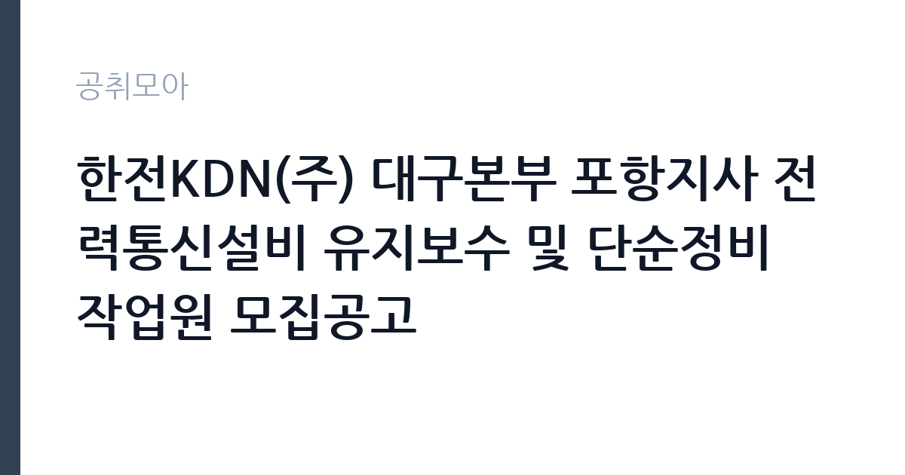

[공공기관] 한전KDN(주) 대구본부 포항지사 전력통신설비 유지보수 및 단순정비 작업원 모집공고
한전KDN · 대구 · 마감 2026-10-16 (D-15) · 출처 잡알리오

한눈에 보는 모집 조건
| 기관 | 한전KDN |
|---|---|
| 공고명 | 한전KDN(주) 대구본부 포항지사 전력통신설비 유지보수 및 단순정비 작업원 모집공고 |
| 고용형태 | 정규직 |
| 근무지 | 대구 |
| 게시일 | 2026-10-02 |
| 마감일 | 2026-10-16 (D-15) |
지원자격, 이렇게 읽으세요
- 공공기관 채용공시
- 세부 조건은 원문 공고문 확인
공통 자격으로 학력과 연령, 외국어 제한이 없습니다. 병역법 제76조에 따른 병역의무 불이행 사실이 없어야 하며, 한전KDN 인사규정상 채용결격사유에 해당하지 않아야 합니다. 직종별 자격과 상세 사항은 모집공고문 지원 자격을 참조해야 합니다. 현장 작업과 자재 운반 같은 업무 특성상 신체 활동에 지장이 없는 건강 상태가 필요합니다. 세부 조건은 원문 공고문에 따릅니다.
이 공고의 포인트
이 공고의 포인트는 세 가지입니다. 첫째, 학력과 연령, 외국어 제한이 없습니다. 스펙보다 현장 근무 가능 여부가 중요합니다. 둘째, 공기업 현장 직무입니다. 한전KDN은 한전 계열 공기업으로 전력ICT 분야에서 30년 이상 업력을 쌓은 기관입니다. 셋째, 포항 근무입니다. 대구본부 포항지사 관할이라 포항과 경북 동부권 거주자에게 출퇴근 여건이 좋습니다. 고용형태와 계약 기간은 원문에서 반드시 확인하셨습니다.
전형은 어떻게 진행되나
전형은 서류 심사와 면접으로 진행될 것으로 보이며, 정확한 전형 단계와 제출 서류는 모집공고문에서 확인하셔야 합니다. 현장 작업원 채용은 서류보다 면접과 체력, 기능 확인이 중요한 경우가 많습니다. 지원서에는 현장 작업이나 전기, 통신 관련 경험이 있으면 구체적으로 적으셨습니다. 모집공고문에 안내된 접수 방법과 접수처를 확인하고 마감일 전에 접수하셨습니다.
원문에서 확인한 전형 방식
가. 공통 - 학력, 연령, 외국어 제한 없음 - 병역법 제 76조에서 정한 병역의무 불이행 사실이 없는 자 - 당사 인사규정 2.1.4(채용결격사유)에 해당하지 않는 자 나. 직종별 자격 및 상세 사항은 모집공고문 지원 자격 참조
이런 분께 추천해요
- 전기나 통신, 설비 현장 작업 경험이 있으신 분
- 학력과 연령 제한 없는 공기업 현장직을 찾으시는 분
- 포항과 경북 동부권 거주로 출퇴근이 가능하신 분
지원 전 체크리스트
- 직종별 지원 자격을 모집공고문에서 확인하셨습니다
- 병역의무와 채용결격사유에 해당하지 않는지 확인하셨습니다
- 고용형태와 계약 기간, 보수 조건을 원문에서 확인하셨습니다
- 마감일 10월 16일 이전에 접수를 마치셨습니다
모집 일정과 제출 타이밍
마감일은 2026년 10월 16일입니다. 게시일 10월 2일부터 2주 정도 여유가 있지만 현장직 모집은 접수 현황에 따라 조기 마감되거나 연장되는 경우가 있으니 가급적 일찍 접수하시기 바랍니다. 접수 방법과 제출 서류는 모집공고문에 안내돼 있으니 먼저 확인하셨습니다.
직무 이해하기: 공공기관
전력통신설비 유지보수 작업원은 변전소와 배전 설비에 딸린 통신 설비, 원격검침 인프라의 현장 유지보수와 단순정비를 담당합니다. 설비 점검과 청소, 자재 운반, 작업 보조 같은 현장 업무가 중심입니다. 한전KDN은 AMI 설비 고장 시 전문 인력이 현장에 출동해 설비와 통신 상태를 확인하는 체계를 운영하고 있으며, 작업원은 이런 현장 대응을 지원합니다. 안전 수칙 준수와 작업 일지 작성이 기본이며, 고소 작업이나 야외 작업이 포함될 수 있습니다.
자기소개서 작성 팁
자기소개서는 현장 경험을 중심으로 쓰셨습니다. 전기와 통신, 건설 현장에서 어떤 작업을 했고 어떤 장비를 다뤘는지를 구체적으로 적으시면 좋습니다. 안전교육 이수 경험이나 관련 자격증이 있으면 앞에 배치하셨습니다. 체력과 성실성을 보여주는 경험을 넣어주시고, 포항 지역 근무 가능성과 장기 근무 의지를 밝히셨습니다.
면접 준비 포인트
면접에서는 현장 적응력과 안전 의식을 묻습니다. 야외 작업과 고소 작업, 비상 출동에 대한 수용 의사를 확인하는 질문이 나올 수 있습니다. 과거 현장에서 위험 상황을 어떻게 대처했는지 경험을 설명하셨습니다. 교대나 연장 근무 가능 여부를 묻는다면 솔직하게 답변하셨습니다. 한전KDN과 전력통신설비에 대한 기본 이해를 보여주시면 좋습니다.
급여·근무조건 읽는 법
보수와 고용형태, 계약 기간 같은 세부 조건은 원문 모집공고문에서 확인하셔야 합니다. 현장 작업원 모집은 일급제나 월급제 등 다양한 보수 형태가 있으니 공고문의 보수 항목을 꼼꼼히 읽으시기 바랍니다. 4대 보험과 퇴직금, 연장근로수당 적용 여부도 공고문과 담당 부서를 통해 확인하셨습니다. 정확한 수치가 없는 항목은 지어내지 않고 원문 기준으로 판단하시는 것이 안전합니다.
자주 묻는 질문
- 한전KDN은 어떤 회사인가요
한국전력의 정보통신설비 관리를 수행하기 위해 설립된 한전 계열 에너지ICT 전문 공기업입니다. 전력통신망과 지능형 전력계량 인프라(AMI), 전력제어시스템 운영을 맡고 있으며 30년 이상 업력을 이어오고 있습니다. - 학력이나 연령 제한이 정말 없나요
모집공고문 공통 조건에 학력과 연령, 외국어 제한이 없다고 명시돼 있습니다. 다만 병역의무와 채용결격사유, 직종별 자격은 충족해야 하므로 공고문의 지원 자격 항목을 확인하시기 바랍니다. - 근무지는 어디인가요
대구본부 포항지사 관할이라 포항과 경북 동부권 현장이 중심이 될 것으로 보입니다. 정확한 근무지와 배치 기준은 모집공고문에서 확인하시기 바랍니다.
함께 보면 좋은 공고
[공공기관] 한국토지주택공사 경기남부지역본부 기간제근로자(보상일반역, 보상전문역) 채용공고 — 마감 2026-10-16[공공기관] 한국토지주택공사 광주전남지역본부 기간제근로자(보상일반역, 보상전문역) 채용공고 — 마감 2026-10-16[공공기관] 한국토지주택공사 세종특별본부 기간제근로자(보상일반역, 보상전문역) 채용공고 — 마감 2026-10-19출처: 잡알리오 공개정보를 바탕으로 공취모아가 정리한 안내글입니다. 모집 조건·일정은 변경될 수 있으니 지원 전 반드시 원문 공고문을 확인하세요. 본 글은 정보 제공용이며 합격을 보장하지 않습니다.